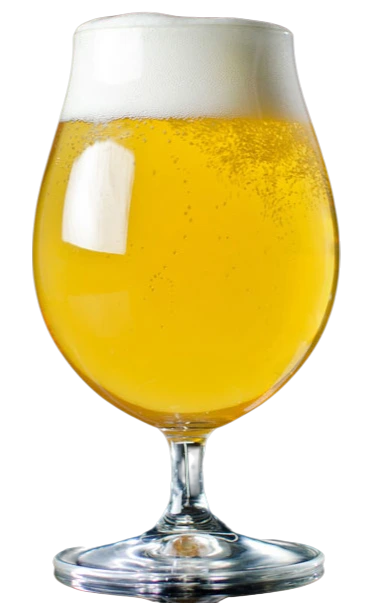
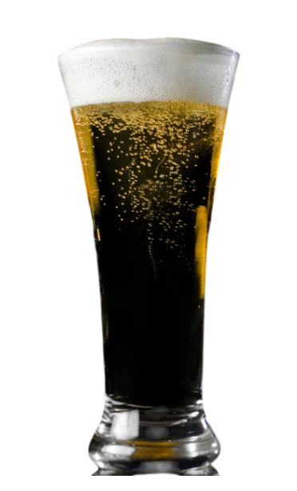
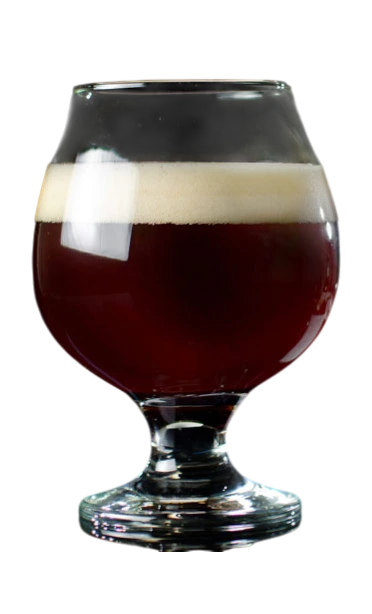
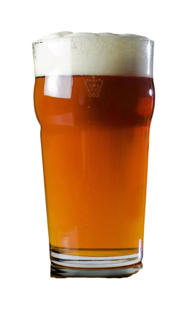
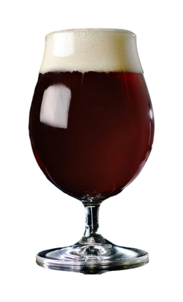
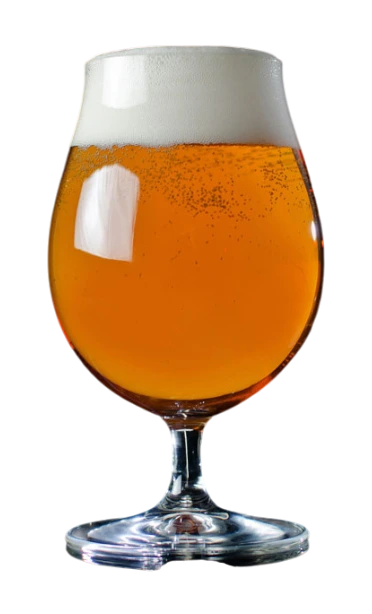
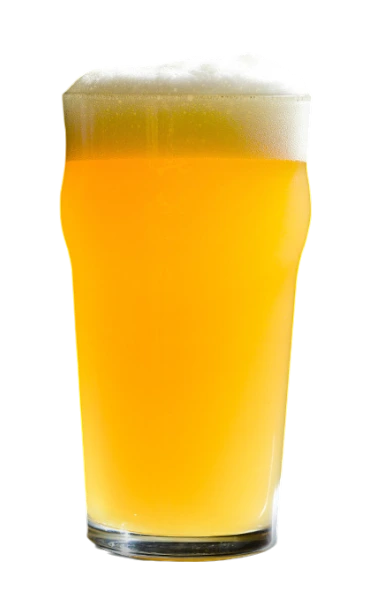
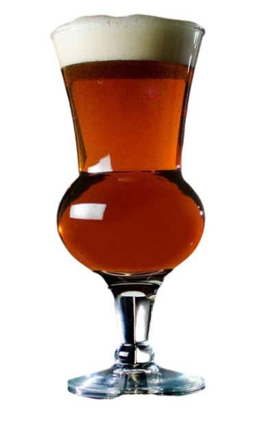

Каталог стилів пива
Хоча велика кількість стилів пива, які складають крафтову сцену, є захоплюючою, це також може лякати - і це нормально. З усіма різними стилями пива та назвами сортів важко запам'ятати, що відрізняє один від одного. Ось чому ми створили детальний список стилів пива, доповнений кількома назвами пива та стилями пива, щоб допомогти вам знайти свої улюблені сорти пива.
-

Один із найбільш легких для сприйняття стилів, золотий або світлий ель – це питке пиво з привабливим зовнішнім виглядом, без яскраво виражених солодових або хмільних ноток.
Американський Світлий Ель
-

Чеський пльзенер має легку солодкість і виразний солодовий смак з підсмаженими нотками, схожими на печиво або хліб. Гіркота хмелю середня.
Чеський Пльзенер
-

Назва «Британський ячмінний ель» позначає групу міцних елів. Демонструє складну комбінацію карамельних та фруктових смаків, збалансованих зігріваючим алкоголем.
Британський Ячмінний Ель
-

Каліфорнійський лагер виготовляється з лагерових дріжджів, але ферментується за температури елів. Відчутні підсмажені та/або карамельні солодові нотки.
Каліфорнійський Лагер
-

Традиційні боки - це пиво, виготовлене лише з солоду, з високим вмістом солодкості. Солодовий характер повинен поєднувати солодкість із підсмаженими або горіховими нотками.
Німецький Бок
-

Характеризується високою гіркотою, насиченим смаком і ароматом хмелю. Хмільний характер свіжий і виразний завдяки використанню різних сортів хмелю.
Імперський Індійський Світлий Ель
-

Підкреслює аромат і смак хмелю без сильної гіркоти. Активно використовує пізнє та сухе хмелювання, щоб створити яскравий фруктовий, тропічний хмільний смак.
IPA Нової Англії
-

Шотландські елі варіюються залежно від міцності та смаку, але загалом зберігають солодовий характер з певними нотками карамельного солоду та м’якою, «жувальною» текстурою.
Шотландський Ель